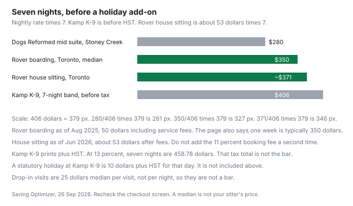

Pets · Canada
Dog Boarding vs Pet Sitter vs House Sitter in Canada: Nightly Costs and How to Choose
The dog’s care while you travel is a nightly rate times the nights you are gone, plus any holiday day the facility actually charges, plus the rules they set for vaccines. This page uses Rover’s Toronto medians as the platform printed them, and two kennel pages that published their own rates. It does not rank a platform or a kennel. Pet-sitting platforms are an offer type, disclosed below. Education only.
Disclosure: Pet-sitting platform referral types are an offer type. Saving Optimizer may earn a commission if we later add a partner link. We do not currently claim a pet-sitting platform partnership. Rover is named because its Toronto pages are the dated source of the medians below, not because it is a recommended partner. A referral link would not change the nightly arithmetic.
Key takeaways
- Rover Toronto boarding, page opened 26 Sep 2026: median $50 per night as of Aug 2025, including service fees. One week typically $350. Most rates on that page, $32 to $72.
- Rover Toronto house sitting: median about $53 per night as of Jun 2026, after service fees. The page says estimates include a booking fee of 11 percent. Do not add 11 percent again on top of $53.
- Drop-in pet sitting in Toronto: median $25 per visit. Average $26.64 per visit as of July 2026. A visit is not a night.
- Kamp K-9, Mississauga: $58 plus HST per night for a 7- to 13-night stay, and $10 plus HST on a statutory holiday day inside the stay. Dogs Reformed, Stoney Creek: $35, $40, or $50 per night by suite.
- A research lead of kennels at about $45 to $70 was not one facility’s Toronto price. The named rates above are what the pages printed. Put the trip on a sinking fund when you book the flights.
Toronto benchmarks: Rover boarding median about $50/night, house sitting about $53/night, kennels about $45–$70
Rover’s Toronto dog-boarding page says, as of Aug 2025, the median cost of dog boarding is $50 per night, including service fees, and that boarding for one week typically costs $350. It also says most Toronto boarding rates on the platform can be found from $32 to $72 per night, and that sitters set their own rates. The count on that page is 4,707 sitters as of Aug 2025. The page was still showing those sentences when opened on 26 Sep 2026. Treat “as of Aug 2025” as the platform’s own date, not as a price you measured in September 2026. Re-open the page when you book.
The Toronto house-sitting page says the median cost per night is $53, and that the median as of Jun 2026 was about $53 per night after Rover’s service fees. Estimates on that page are per night for one dog and include a booking fee of 11 percent. Because the $53 figure is already after fees, adding another 11 percent would double-count. The sitter count is 4,028 as of Jun 2026. A house sitter stays in your home. Boarding on Rover, as that page describes it, is the dog staying in the sitter’s home. Those are different services at similar medians.
The “kennels about $45 to $70” phrase in the heading was a research lead, not a line on Rover’s page. Two kennel sites did publish rates. Dogs Reformed, a boarding facility in Stoney Creek, Hamilton, on a page aimed at people near Mississauga, lists a small suite at $35 per night, a mid suite at $40, and a luxury suite at $50. No tax line was printed there. Kamp K-9, 3156 Lenworth Drive, Mississauga, lists $60 plus HST per night for one night and for two to six nights, $58 plus HST for seven to thirteen nights, $56 plus HST for fourteen to nineteen nights, and $54 plus HST for twenty or more. A second dog is $50 plus HST. Seven nights at Kamp K-9’s 7- to 13-night rate is 7 times $58, which is $406 before tax. Ontario’s 13 percent HST on $58 is $7.54, so $65.54 a night, and seven nights is $458.78. That tax total is arithmetic. The kennel printed “plus HST,” not the $458.78. Paws and other Toronto kennels were not opened, so they are not given a rate. The $45 to $70 band is not used as a bar on the chart.
Holiday surcharges
Kamp K-9 prints one holiday rule: $10 plus HST for any statutory holiday day that falls inside the stay. One statutory holiday in a seven-night stay adds $10 before tax, or $11.30 if you apply 13 percent HST to that $10. The page does not say the entire week jumps to a holiday rate. Dogs Reformed’s rate page did not print a holiday surcharge. Rover’s Toronto median paragraphs did not print a Christmas percentage. Ask the sitter. A profile can say one thing and a holiday message another. Get the surcharge in the booking total before you pay.
If your trip includes Christmas Day or another statutory holiday, add that day once you know the rule, and do not add it to the Rover median until the checkout screen shows it. The family vacation guide is where the human lodging sits. The dog is an extra line, not a reason to skip the lodging math.
Vaccination and insurance requirements
Ontario Regulation 567 requires the owner of a dog three months or older to keep the dog immunised against rabies and to revaccinate by the certificate date. That duty does not start at the kennel door. It already applies at home. Beyond rabies, the two kennel rate pages opened here did not list required vaccines. Many facilities ask for Bordetella or other shots. The vaccine guide has the Ontario SPCA price of $33 for Bordetella and for rabies, and the AAHA note that Bordetella is a lifestyle vaccine a facility may still require. Email the facility and keep the reply with the booking.
Insurance is two different questions. The kennel or the platform may require the sitter to carry a policy. Your own tenant or home policy is about your apartment and the person who has your keys. This draft did not open a pet-sitting endorsement. Read your certificate, and use the tenant-insurance guide for how to compare a contents and liability quote. A house sitter living in your unit is a fact your insurer may want. A dog in someone else’s house is a fact their insurer may want. Ask both, in writing, before a long weekend.
Friend swaps and trading sits
A friend who takes the dog, or who stays in your home while you stay in theirs, can be a zero-dollar line. Zero is not the same as free of rules. Ontario rabies law still applies. Write down who may authorise veterinary care and up to what amount, where the dog sleeps, and what happens if your trip runs long. A traded sit is still a seven-night responsibility. If your friend would otherwise have boarded their own dog at the Rover median, the trade is worth about $350 of boarding you both did not pay, which is 7 times $50. That “worth” is an illustration using the Aug 2025 median. It is not cash. It disappears if either household is unhappy and one of you ends up at a kennel anyway.
Keys, alarms, and plants are part of a house swap. So is a plan if the dog needs a veterinarian on a Sunday. The emergency-bill guide is the intake list to leave on the counter, with your clinic’s name and a card the friend is actually allowed to use. Do not leave a friend to invent a payment plan.
Booking early for holidays
No source opened here gave a number of weeks before Christmas by which Toronto boarding “sells out.” What the sources do give is a fee that appears when a statutory holiday sits inside the dates, and sitter counts that are already months old relative to 26 Sep 2026. Book when the travel dates are real. Recheck the nightly rate on the checkout screen, because a median is not your sitter’s price. If you are using Kamp K-9’s length discount, a seven-night stay is the $58 band, not the $60 band. Crossing from six nights to seven nights changes the printed rate. Count the nights the way the kennel counts them. A one-night stay there covers 24 hours, and time past that can be billed as a day rate. Read that rule before you plan a late flight home.
A staycation can still need care if you are out of the house all day. That is a drop-in problem, not a boarding problem. The Toronto pet-sitting page’s median is $25 per visit, and the average it prints is $26.64 as of July 2026, with an 11 percent booking fee already discussed in the way the estimates are built. Two visits a day is a different budget from one. The table below uses one visit a day only as a labelled illustration.
Cost table for a 7-night trip
| Option | Nightly or per visit, and source | 7-night total | Holiday surcharge on the page | Requirements the page actually stated |
|---|---|---|---|---|
| Rover boarding, Toronto | $50 per night median, as of Aug 2025, service fees included. Range cited: $32 to $72. | $350. The page also says one week typically costs $350. | Not printed on the median paragraph | Sitters set rates. Background check noted for sitters joining the platform. Your dog’s needs can change the price. |
| Rover house sitting, Toronto | About $53 per night median, as of Jun 2026, after service fees. Estimates include an 11 percent booking fee. | About $371, which is 7 times $53. | Not printed | One dog in the estimate. Customising the booking can change the rate. |
| Drop-in visits, Toronto | Median $25 per visit. Average $26.64 as of July 2026. | Illustrative $175 if you buy one visit a day for 7 days at the $25 median. Two visits a day would be $350. The visit count is not a Rover quote. | Not printed | Priced per visit, not per night. |
| Dogs Reformed suites, Stoney Creek | Small $35, mid $40, luxury $50 per night. No HST printed. | $245, $280, or $350. | Not printed | Suite size. Page describes a private facility in Stoney Creek. |
| Kamp K-9, Mississauga | $58 plus HST per night for 7 to 13 nights. | $406 before tax. $458.78 if each night is grossed up by 13 percent HST. | $10 plus HST per statutory holiday day inside the stay. Not included in the $406. | Length band. Second dog $50 plus HST. A stay past 24 hours can pick up day rates. |
| Friend swap | No published nightly rate. Cash can be $0. | $0 if nobody charges. An illustration of avoided Rover boarding is about $350, and only if both trips would have paid that median. | Whatever you agree | Ontario rabies law still applies. Write a vet-authorisation limit. |

Sources & date stamps
- Rover Toronto dog boarding: median $50 per night as of Aug 2025, including service fees; one week typically $350; most rates $32 to $72; 4,707 sitters. Opened 26 Sep 2026.
- Rover Toronto house sitting: median about $53 per night as of Jun 2026, after service fees; estimates include an 11 percent booking fee; 4,028 sitters. Opened 26 Sep 2026.
- Rover Toronto pet sitting: median $25 per visit; average $26.64 as of July 2026. Opened 26 Sep 2026.
- Dogs Reformed, Stoney Creek: small suite $35, mid $40, luxury $50 per night. Opened 26 Sep 2026.
- Kamp K-9, Mississauga: nightly bands plus HST, and $10 plus HST per statutory holiday day. Opened 26 Sep 2026.
- Ontario Regulation 567 for the rabies duty. No kennel vaccine checklist was printed on the rate pages. A single “$45 to $70” kennel band was not on these pages.
Frequently asked questions
How much is dog boarding per night in Canada?
There is no national rate. On Rover’s Toronto dog-boarding page, opened 26 Sep 2026, the median as of Aug 2025 is $50 per night including service fees, and one week is typically $350. The same page says most Toronto rates on the platform run from $32 to $72. A kennel is a different product. Kamp K-9 in Mississauga lists $60 plus HST per night for one to six nights, and $58 plus HST for seven to thirteen nights.
Is a pet sitter cheaper than a kennel?
It depends which sitter and which kennel, and whether you are buying nights or visits. Rover’s Toronto house-sitting median as of Jun 2026 is about $53 per night after service fees, which is close to the $50 boarding median and not automatically cheaper. A drop-in visit is a different unit: the Toronto pet-sitting page shows a median of $25 per visit and an average of $26.64 as of July 2026. Dogs Reformed in Stoney Creek lists suites at $35, $40, and $50 per night, with no HST line on that page.
What vaccines do boarding facilities require?
The rate pages opened for Kamp K-9 and Dogs Reformed did not print a vaccine checklist. Ontario Regulation 567 still requires rabies immunisation for a dog three months or older, whether or not the dog is boarding. A facility can ask for more, including Bordetella. Get that list in writing when you book. The vaccine guide explains the Ontario rabies rule and the Ontario SPCA’s $33 price for Bordetella.
Do sitters charge more at holidays?
Rover’s Toronto median pages did not print a holiday percentage. Kamp K-9 prints a $10 plus HST charge for any statutory holiday day inside the stay, on top of the nightly rate. Ask each sitter and each kennel for their holiday rule before you accept a date. A median from August or June is not a Christmas quote.
How early should I book for Christmas?
No page opened for this draft printed a “book this many weeks ahead” rule. Rover’s Toronto pages said 4,707 boarding sitters as of Aug 2025 and 4,028 house sitters as of Jun 2026. Those counts are supply on those dates, not a vacancy promise in December. Book when you have the travel dates, and recheck the total after any holiday surcharge is added.